さて。
埼玉県のモンキー探し、お次は鴻巣市安養寺の
八幡神社。
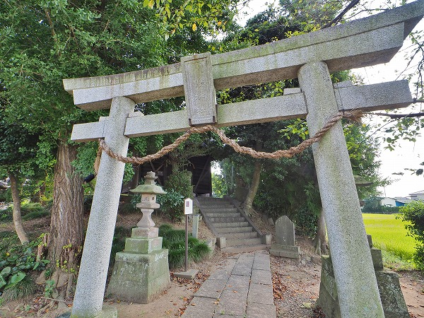
拝殿本殿は敷地内の少し小高い場所にある。
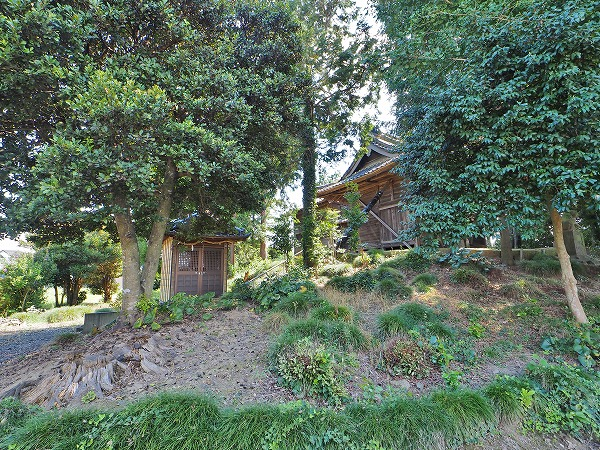
その本殿拝殿よりやや下がったところにある日枝神社。
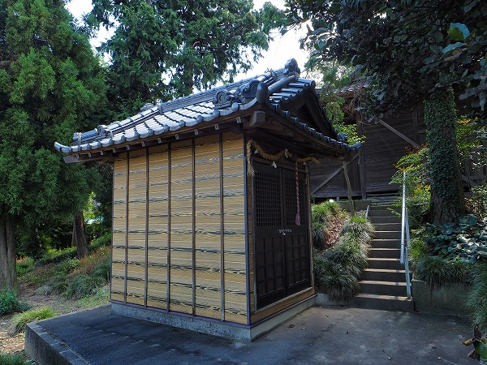
最近建て替えられたようで綺麗だ。
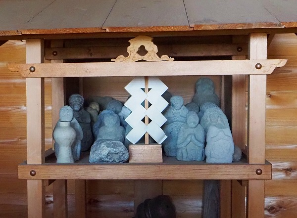
中には十数体のお猿さんが。
ここも
合掌型だった。
そういえばココのお猿さん達はお股を赤く塗ってないな。
（2024.09.）
次は加須市上高柳の
山王神社。
周辺は広大な田んぼが広がっているが、ここだけは木に囲まれやや鬱蒼とした雰囲気。
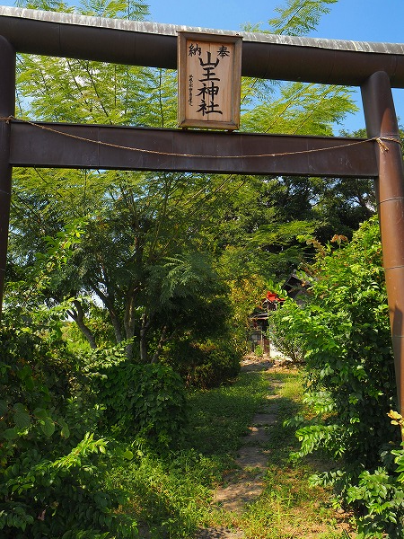
参道の先に社殿が見える。
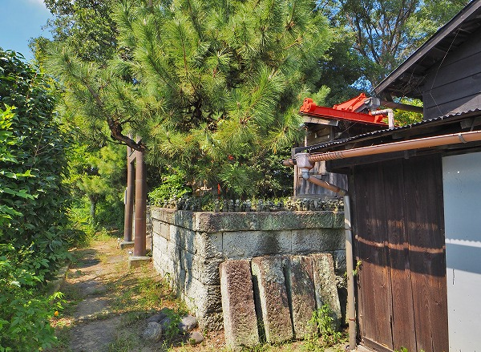
社域は大谷石で土盛りされているのだがそのエッジに何かが並んでいる。
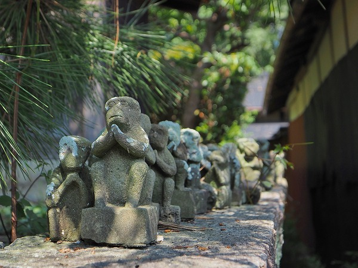
大量のモンキーだった。
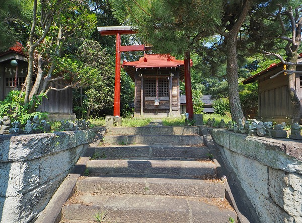
土盛りの大谷石の上に延々とお猿さんが並んでいるのだ。
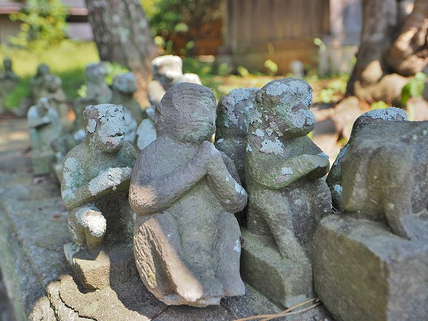
チョット尋常じゃない数だ。
恐らく三ツ木神社と同じくらいの数ではなかろうか。
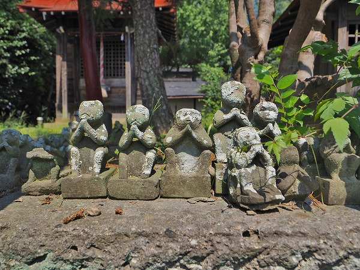
しかも三ツ木神社にあったお引越ししてきたお猿さんはこの近所の日枝神社にあったのだ。
つまりこのエリアには2つも大量に猿が奉納されている神社があったことになる。
つまり三ツ木神社と並んで
この習俗のホットゾーンと考えていいだろう。
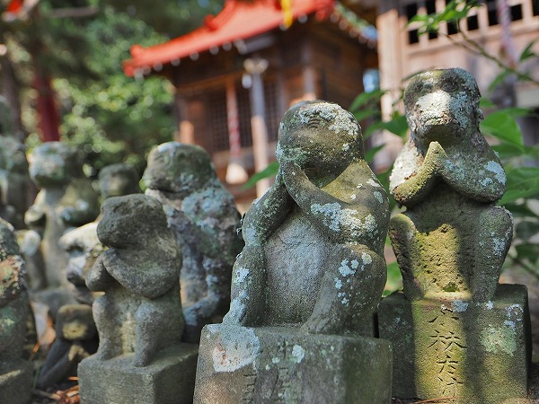
ここの猿も合掌型である。
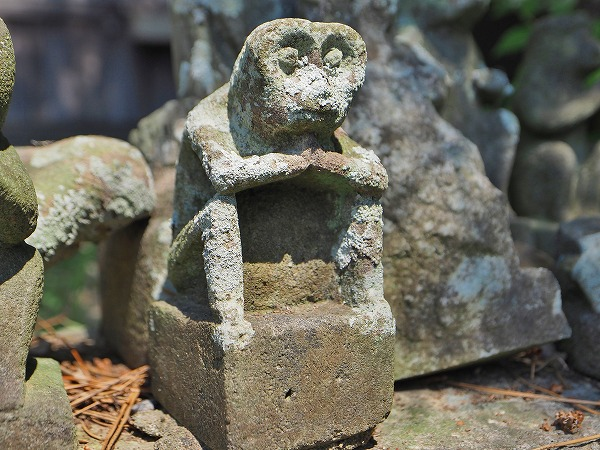
やけに痩せた猿。
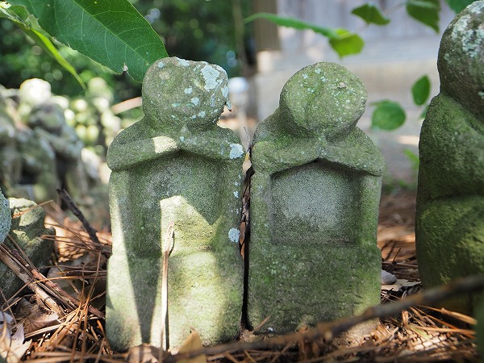
中にはかなりデフォルメされたお猿さんも。
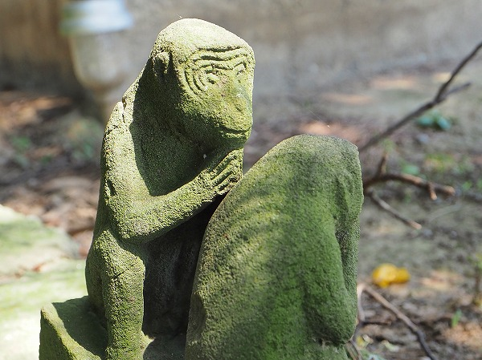
ノミ取りしてるみたいだね。
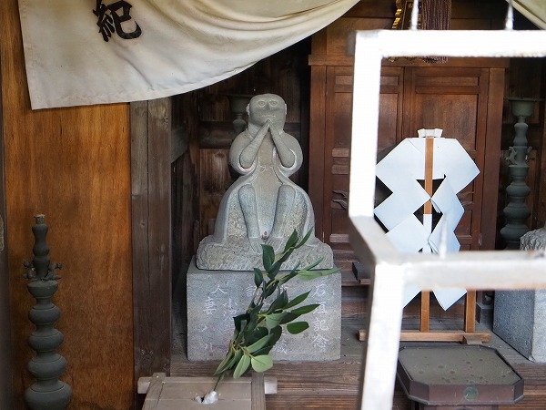
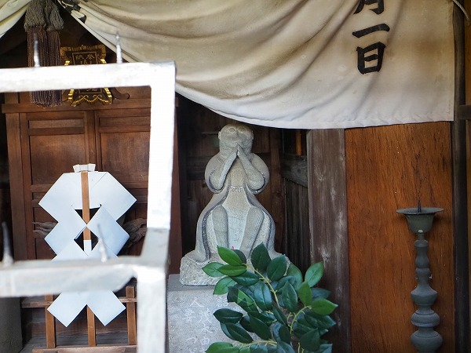
神社には3つの社が建っている。
中央の社には2体の大きい猿が。
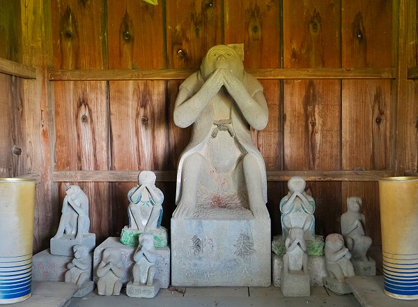
左右の社にもそれぞれ大きい猿の石像が祀られていた。
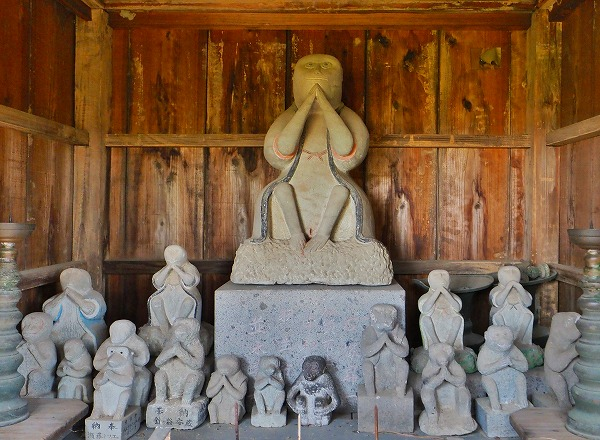
大きな猿は半纏のようなものを羽織っており、彩色もされている。
他にも着物を着た猿が数体あり、着物や局部が着彩されていた。
それ以外の子猿は股も赤く塗られてないようだ。
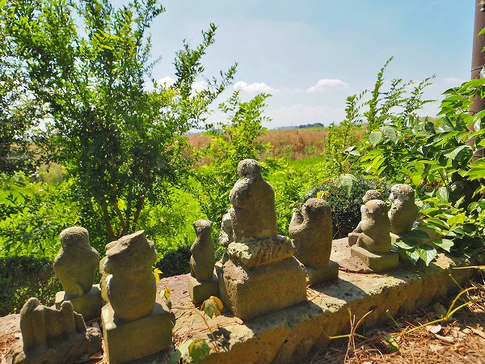
目の前には田んぼと休耕田以外何もない景色を猿たちは眺めている。
（2024.09.）
次は久喜市上内の
山王神社。
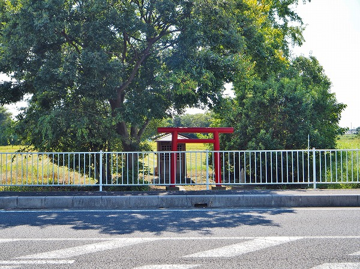
鳥居と社だけのシンプルな神社だ。
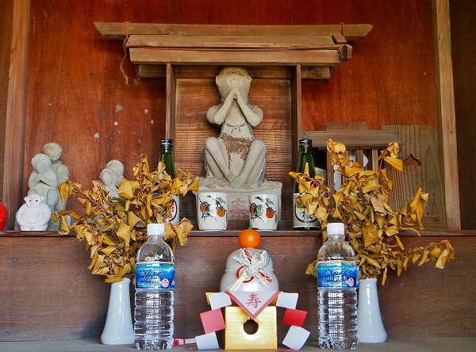
中には中央に大きな猿、左に4体のミニ猿がいた。
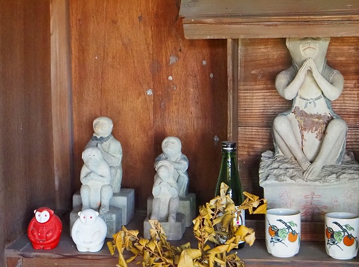
何故か紅白の猿の人形も置かれていた。
この日はここでタイムアップ。また別の日にモンキーウオッチングをしよう。
（2024.09.）
で、別の日。
この日は公共交通+徒歩で4件の神社を回る予定。
この日最初に訪れたのは鴻巣市本町の
日枝神社。
鴻巣駅から歩いて10分ほどの市街地にある神社だ。
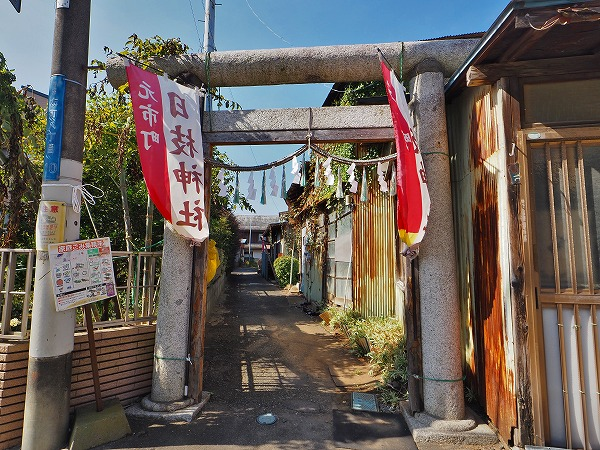
一寸入るのに勇気がいる佇まいだが、お邪魔しますよ。
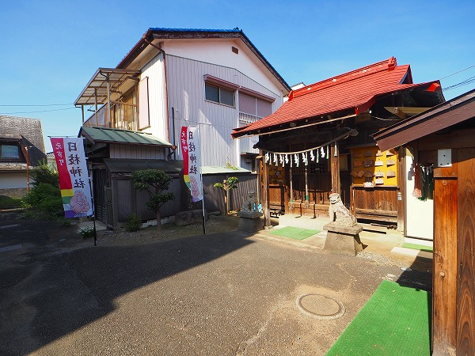
路地のどんつきのエアポケットのような場所に神社はある。
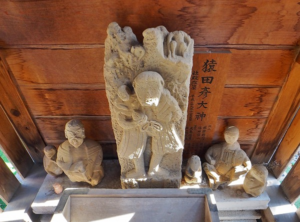
拝殿右手の小祠にお猿がいた。
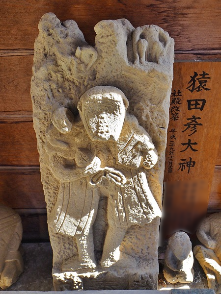
しかしこれは猿田彦の神像で、これまで見てきた奉納猿とは系統が違う。
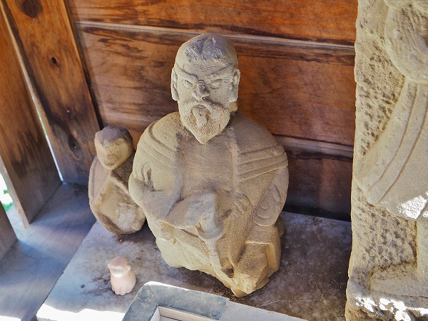
左にいるのも髭をたくわえ刀を持っているようだ。侍なのか。
そのさらに左にいるカエルみたいな像は合掌してる猿なのかも知れない。
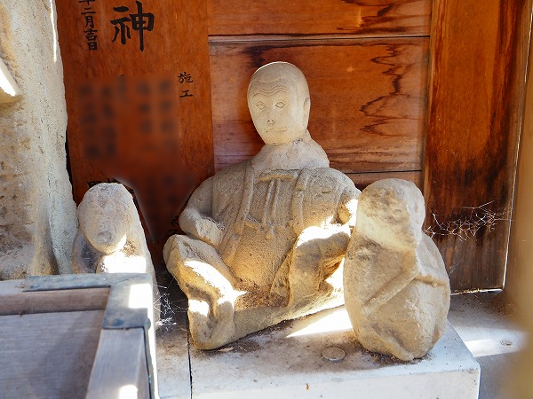
右側。足を延ばして座る猿。
これもまた眷属系の猿なのだろうか。
やけにリラックスしてますけど。
その右にいるのは合掌猿だろう。
チョット今まで見てきた猿奉納の神社とは毛色が違ってた。
（2024.10.）
続いてバスで向かったのは鴻巣市広田の
日枝神社。
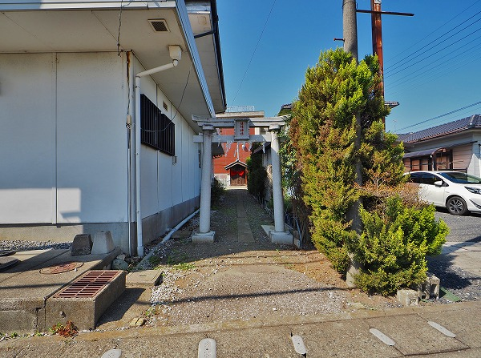
あまりに入り口が狭くて見落としそうになった。
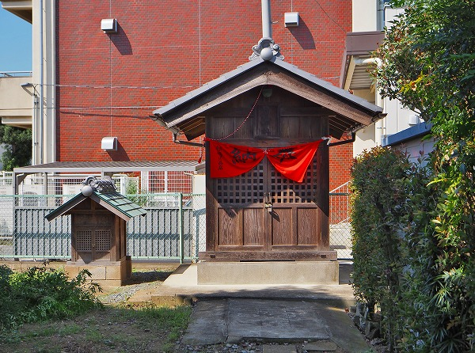
小さな社と祠がある。
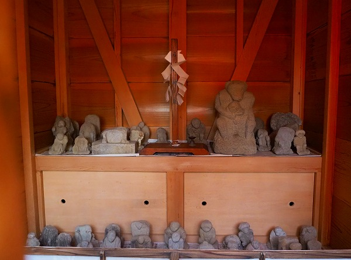
扉が開かないので格子の隙間から拝見。
社の中にミニモンキーがいた。
コレコレ、コレが見たかったんよ～！
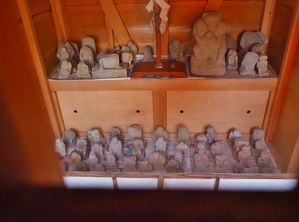
ここの猿は
ほとんど非合掌型。
そしてお股の彩色もない。
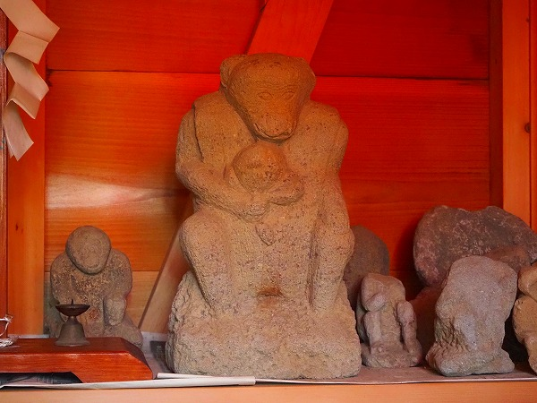
上の段の一番大きな猿は桃を抱えていた。
（2024.10.）
次は鴻巣市小谷の
日枝神社。
ここも路線バスとコミュニティバスを乗り継いで来た。
ここ数年、バスや徒歩を駆使して寺社巡りをするのが楽しくなってきた。
以前はコスパタイパ優先で目標を定めて車で点から点へ移動するような旅が多かったが、最近はその道中を歩いたりバスに乗ったりするのが楽しくなってきた。
多分年を取ったんだと思う。
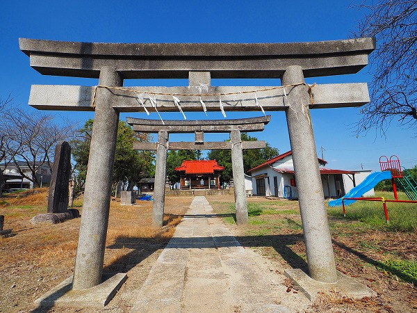
これまで訪れてきた神社の中では比較的広い。
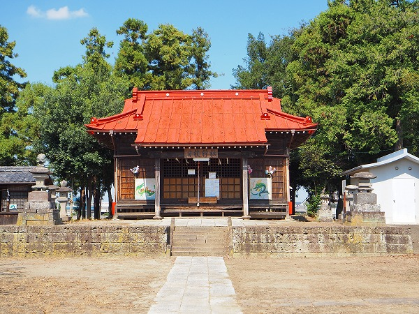
本殿の彫刻が見事だった。
拝殿には入れなかったのでここもまた外から覗かせてもらいますよ、と。
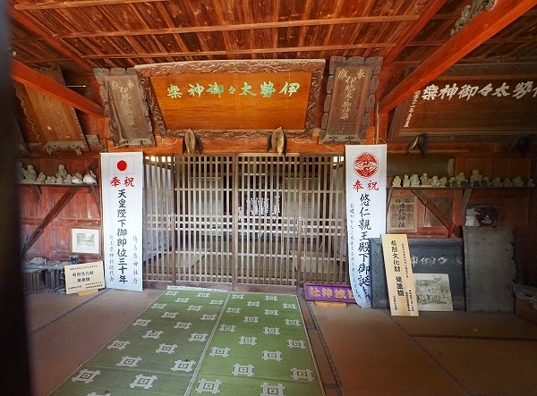
拝殿の内部に棚があり、そこに猿が並んでいた。
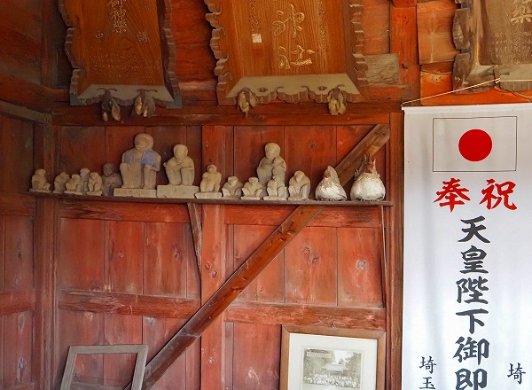
左側。
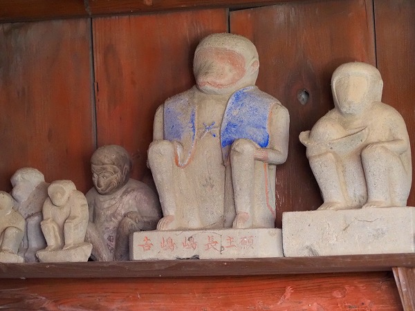
やはりちゃんちゃんこを着た猿には彩色が施されている。
その割には股間を赤く塗ってある猿はいない。
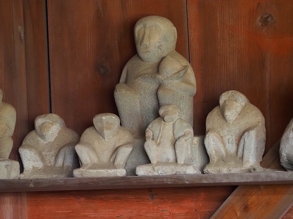
桃を持った猿、今回何度目だ。
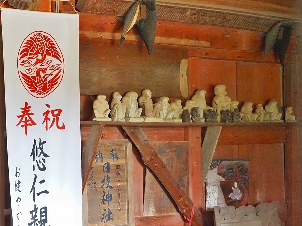
右の棚。
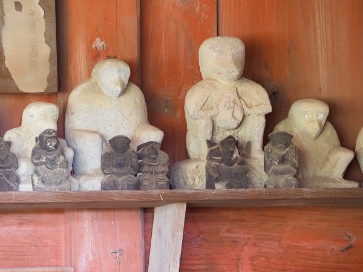
恵比寿大国も一緒に祀られていた。
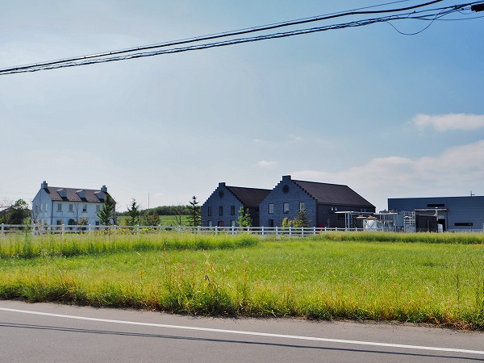
神社のすぐ近くにある洋風の建物群。
近年できたウイスキーの醸造所だそうな。
（2024.10.）
ラストは鴻巣市大芦の日枝神社。
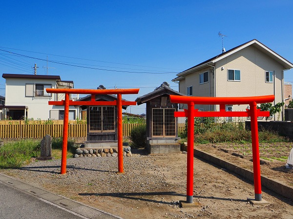
吹上駅から歩いて20分。
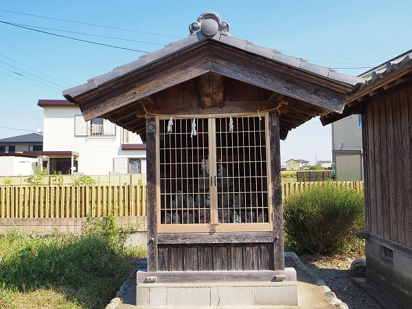
2基並んでいる左側が日枝神社だ。
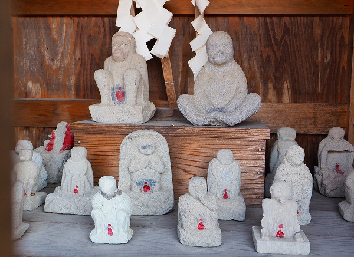
おりました。おりました。
上にはこの地方では珍しく男女（夫婦？）の猿が鎮座しておいた。
オスの猿（右側）は胡坐をかいてやけに写実的な猿だな。
その下に猿が並んでいる。
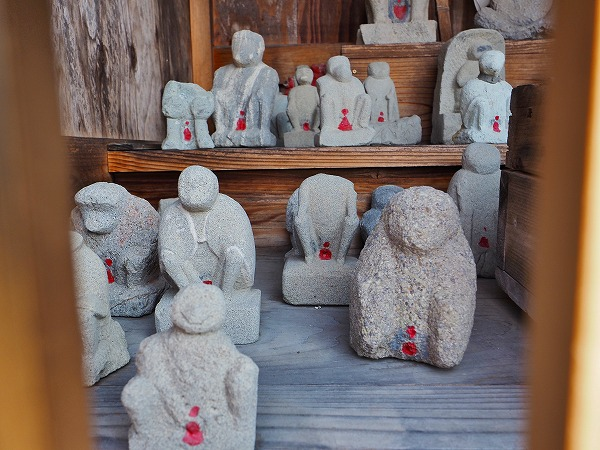
どれもお股が赤く塗られている。
しかも全部最近塗り直されたような様子。
しかも上の赤いポッチまでご丁寧に塗ってある。
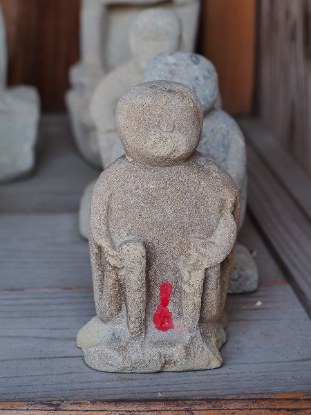
並んでいるお猿はほとんどが非合掌型。
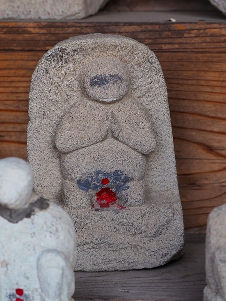
数少ない合掌型。
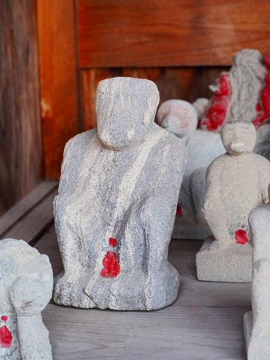
石目が強いのでタスキをかけているようなモンキー。
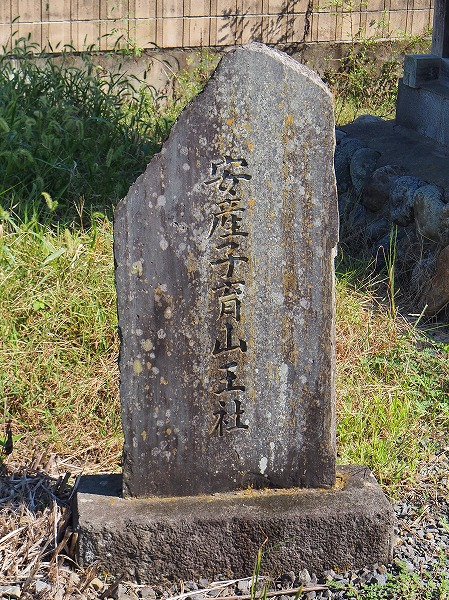
傍らには安産子育山王社という石碑が建っていた。
これにてモンキーウオッチングもひとまず終了。
総評としては
思いの外、篤い信仰習俗であることが理解出来た。
さらに合掌か非合掌かの形状問題、股に彩色するかどうか、の傾向としては…
北の方が非合掌型が多く、南、東の方が合掌型が多い傾向にある。
また、
股の着色に関しては北と南に顕著に見られ中央部から東では塗られていないケースが多かった、という結論を得た。
ただし、サンプル数があまり多くなく、屋外/屋内といった猿の保存状態も関係するのでデータの正確性としては甚だ心許ない結果とは言える。
今度もデータ精度を補完すべくモンキーウオッチングを継続しようと思っている。
という訳で、他にも猿が奉納されているところ知ってるよ！という方は是非教えてくだされ。
よろしくお願いいたします。
田んぼの真ん中にあるバス停から返りますか。
（2024.10.）